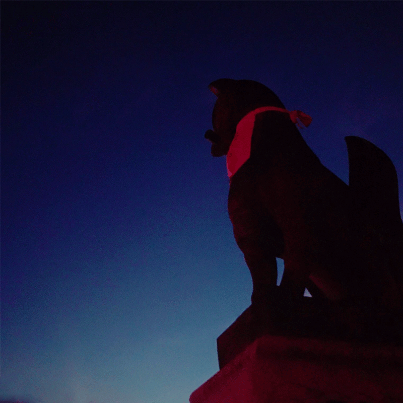
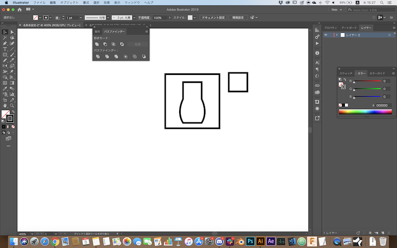

自己紹介動画
(最初「編集なしの動画」課題だと思ってたけど編集しても良さそうだったので編集版も作った。)
仮面ライダーW©東映
ブログ用写真編集
途中まで課題の使用をちゃんと把握できていなかった為、Aiにてロゴデータを作ってそれを使おうと思っていた。
高校時代に自分なりのロゴマークを作っていたのでそれをベクターデータにしようと試みた。

検索した情報から画像トレスからのパスへの変換を行なった.
過去に作っていたそもそものデータがガタガタなものだったので自分で一から曲線ツールでトレースを試みた。
曲線ツールが思いの外難しく難航している際に、そもそも課題が「”写真を”使ってそれを編集しよう」という内容だと把握した。
その際に作業データは破棄してしまった。
「写真をベースにそれを編集して自分なりのブログの看板を作ろう」という事だったので自分の好きな伏見稲荷大社で撮影したこの画像を使うことにした。

暗いので色調補正をかけて明るくしようとした。
だが、元々暗所で撮影した画像である為、高感度ノイズがかなり目立つ様になってしまった。
(画像は当時の編集ファイルから再現して後からスクリーンショットしたもの)
故に別の素材写真を使用することにした。
その素材がこの画像である。
まず、画面左下の白抜けが気になった為、スポット修復ブラシツールを用いて修正した。
もともとかなり自分好みの素材であった為、その後色調補正等を使ってコントラスト等を調節して切り抜いて完成した。

合評時に他の作品やそのコメントを見て聞いて、もっと大胆にいじったり編集したり、いわゆるクソコラの様なふざけた印象的な編集をしても良かったのかなと感じた。結局自分は本課題に関してはスポット修正とコントラスト調整のみしかしていないので、他の人と比べ作業量は劣るなその時感じた。
共用アイコン
ソースコードを表示する時に、文字列のアイコンだと見にくいかなと思い、ダジャレも兼ねてソースアイコンを作ることにしました。
